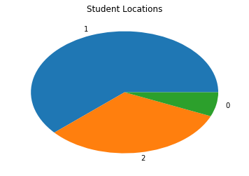
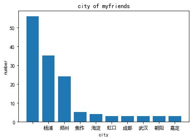
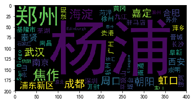
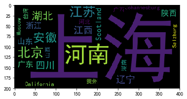

利用python，基于itchats和pandans第三方库分析个人微信朋友圈的信息和特征。
使用itchat获得朋友圈数据，使用pandas进行分析。
准备相应的python库
numpy, pandas, itchat，matplotlib
导入库
1
2
3
4
5
|
import numpy as np
import pandas as pd
import matplotlib as mpl
import matplotlib.pyplot as plt
import itchat
|
获得朋友圈信息
1
2
3
|
# itchat.login()
itchat.auto_login(hotReload=True)
friends = itchat.get_friends(update=True)
|
分析朋友圈
转换成pandas表，查看一下我的朋友圈
1
2
3
4
5
6
7
8
9
10
11
12
13
14
15
16
17
18
19
20
21
22
23
24
25
26
27
|
myfriends = pd.DataFrame(friends)
myfriends.info()
# 性别分析
freqs = myfriends.Sex.value_counts()
plt.pie(freqs, labels=freqs.index)
plt.title('Student Locations')
plt.show()
# 地域分析
myfriends.Province.value_counts()
myfriends.City.nunique()
city_freq = myfriends.City.value_counts()
# 绘图
mpl.rcParams['font.sans-serif'] = ['SimHei']
mpl.rcParams['font.family']='sans-serif'
mpl.rcParams['axes.unicode_minus'] = False
freqs = city_freq[:10]
X = np.arange(len(freqs))
plt.bar(X, freqs, tick_label=freqs.index)
plt.title('city of myfriends')
plt.xlabel('city')
plt.ylabel('number')
plt.show()
|
展示


词云统计显示
安装词云库
词云展示
1
2
3
4
|
fontfile = 'C:/Windows/Fonts/simhei.ttf'
wc = wordcloud.WordCloud(font_path=fontfile)
wc.generate_from_frequencies(city_freq) # 从字典生成词云
plt.imshow(wc) # 显示词云
|
词云展示函数与调用
1
2
3
4
5
6
7
8
9
10
|
import wordcloud # 词云展示库
def plot_words_cloud(freqs, font_path=None):
"""绘制词云图"""
if font_path is None:
font_path = 'C:/Windows/Fonts/simhei.ttf'
wc = wordcloud.WordCloud(font_path=font_path)
# 从字典生成词云
wc.generate_from_frequencies(freqs)
plt.imshow(wc) # 显示词云
|
1
|
plot_words_cloud(myfriends.Province.value_counts())
|
展示


代码整理
1
2
3
4
5
6
7
8
9
10
11
12
13
14
15
16
17
18
19
20
21
22
23
24
25
26
27
28
29
30
31
32
33
34
35
36
37
38
39
40
41
42
43
44
45
46
47
48
49
50
51
52
53
54
55
56
57
58
|
# -*- coding: utf-8 -*-
"""
Created on Tue Jan 29 10:00:03 2019
@author: gsir
"""
import numpy as np
import pandas as pd
import matplotlib as mpl
import matplotlib.pyplot as plt
import itchat
import wordcloud
def itchat_analysis():
''''微信朋友圈分析'''
#微信登录
itchat.auto_login(hotReload=True)
friends = itchat.get_friends(update=True)
#获取好友信息
myfriends = pd.DataFrame(friends)
# 性别分析
freqs = myfriends.Sex.value_counts()
plt.pie(freqs, labels=freqs.index)
plt.title('Sex of myfriends')
plt.show()
# 地域分析
myfriends.Province.value_counts()
myfriends.City.nunique()
city_freq = myfriends.City.value_counts()
# 柱状图绘制
mpl.rcParams['font.sans-serif'] = ['SimHei']
mpl.rcParams['font.family']='sans-serif'
mpl.rcParams['axes.unicode_minus'] = False
freqs = city_freq[:10]
X = np.arange(len(freqs))
plt.bar(X, freqs, tick_label=freqs.index)
plt.title('city of myfriends')
plt.xlabel('city')
plt.ylabel('number')
plt.show()
# 词云展示
font_path = 'C:/Windows/Fonts/simhei.ttf'
wc = wordcloud.WordCloud(font_path=font_path)
wc.generate_from_frequencies(myfriends.Province.value_counts())
plt.imshow(wc)
def main():
itchat_analysis()
if __name__ == '__main__':
main()
|